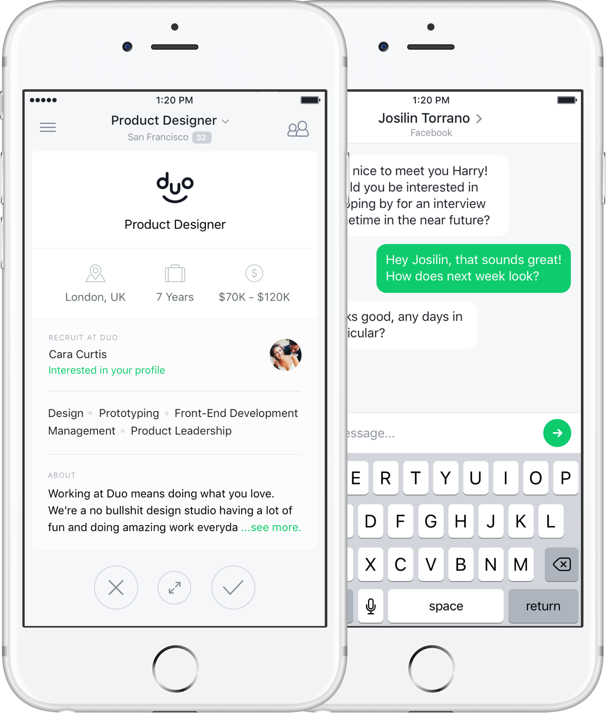
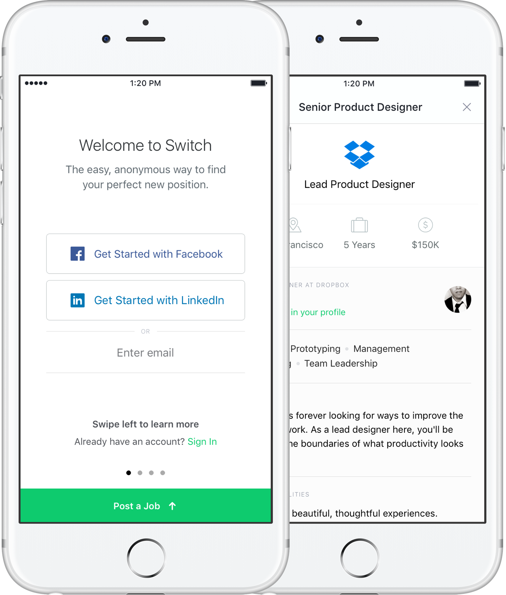
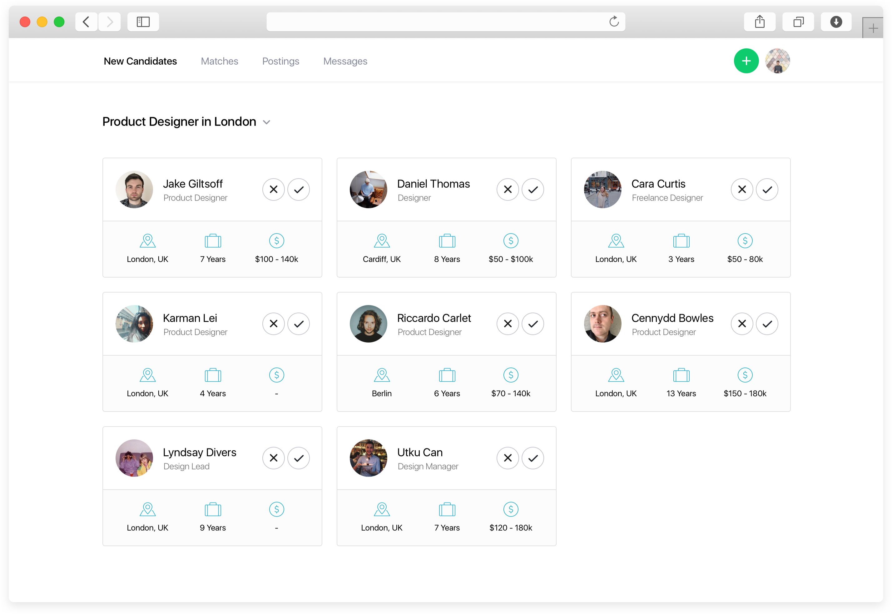

Client
Switch
Period
2015
I partnered with New York startup Switch to make job searching and recruiting easy. My work spanned across web and mobile platforms, covering consumer and admin experiences. Throughout the project I worked closely with the entire team to slowly rollout this re-design.
Switch's user experience is very similar to Tinder. People seeking jobs can swipe right on the one's they're interested in, and left on the jobs they're not interested in. When a recruiter thinks it's a match, a conversation is started. Alongside re-thinking this experience, I also designed an onboarding experience that made it easy to find or post a job.
For recruiters, Switch also wanted to build a web experience that lets you control and manage all of your jobs and potential candidates. I helped them re-design this, and also introduced messaging and commenting within teams.
